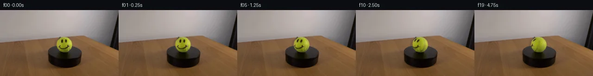

![首帧]()

Round 00
2026-11-05T17:55:51.299229+00:00像素候选变化代码 +173/−0inspection 更新
pixels 7613e0f0a1691cd8 · code fe157807440208d6
查看本轮 generate.py 真实 diff
--- previous/generate.py
+++ current/generate.py
@@ -0,0 +1,173 @@
+"""Source-pixel sphere rotation; local NumPy/SciPy operations only."""
+from pathlib import Path
+import json
+import numpy as np
+from PIL import Image, ImageDraw
+from scipy.ndimage import gaussian_filter, map_coordinates
+from artifact_io import save
+
+ROOT = Path(__file__).resolve().parent
+SOURCE = np.asarray(Image.open(ROOT / 'first_frame.png').convert('RGB'), dtype=np.float64)
+HEIGHT, WIDTH = SOURCE.shape[:2]
+CX, CY, RX, RY = 138.7, 75.4, 16.8, 16.8
+ELEVATION = np.deg2rad(21.0)
+SPEED = 18.0
+
+
+def smoothstep(a, b, value):
+ t = np.clip((value - a) / (b - a), 0.0, 1.0)
+ return t * t * (3 - 2 * t)
+
+
+def harmonic_fill(image, holes):
+ """Estimate plain felt behind the original eyes/mouth for fixed lighting."""
+ out = image.copy()
+ out[holes] = np.array([155., 162., 35.])
+ for _ in range(800):
+ neighbors = (np.roll(out, 1, 0) + np.roll(out, -1, 0)
+ + np.roll(out, 1, 1) + np.roll(out, -1, 1)) * .25
+ delta = np.max(np.abs(neighbors[holes] - out[holes]))
+ out[holes] = neighbors[holes]
+ if delta < 1e-5:
+ break
+ return out
+
+
+Y, X = np.indices((HEIGHT, WIDTH), dtype=float)
+NX, NY = (X - CX) / RX, (Y - CY) / RY
+R2 = NX**2 + NY**2
+SPHERE = R2 < 1.
+NZ = np.sqrt(np.maximum(0., 1. - R2))
+NORMALS = np.stack((NX, NY, NZ), axis=-1)
+AXIS = np.array([0., -np.cos(ELEVATION), np.sin(ELEVATION)])
+
+# Remove source markings only from the illumination estimate, not the texture.
+HOLES = np.zeros((HEIGHT, WIDTH), bool)
+HOLES[63:73, 131:138] = True
+HOLES[63:73, 140:146] = True
+HOLES[75:87, 126:150] = True
+PLAIN = harmonic_fill(SOURCE, HOLES)
+# A Gaussian normalized by the sphere support prevents wood/black edge leakage.
+WEIGHT = SPHERE.astype(float)
+LIGHT = np.stack([
+ gaussian_filter(PLAIN[..., c] * WEIGHT, 1.65) /
+ np.maximum(gaussian_filter(WEIGHT, 1.65), 1e-8)
+ for c in range(3)
+], axis=-1)
+LIGHT = np.maximum(LIGHT, np.array([25., 25., 9.]))
+TEXTURE = np.clip(SOURCE / LIGHT, .04, 2.2)
+
+# One source-derived scalar noise field supplies the surface originally hidden
+# from the camera. A 3D field is coherent as the sphere turns.
+CLEAN = SPHERE & (R2 < .65) & ~HOLES & (Y < 88)
+spread = np.std((TEXTURE[..., 1] - 1.)[CLEAN])
+NOISE_AMPLITUDE = float(np.clip(spread, .018, .042))
+rng = np.random.default_rng(166)
+noise = gaussian_filter(rng.normal(size=(64, 64, 64)), .6)
+noise /= np.std(noise)
+
+# Preserve silhouette antialiasing and the stationary contact shadow.
+ALPHA = smoothstep(-.45, .65, (1 - np.sqrt(R2)) * RX)
+ALPHA *= smoothstep(92.0, 89.7, Y)
+ALPHA *= SPHERE
+
+
+def source_normals(angle_degrees):
+ # Inverse Rodrigues rotation. A positive world-up angle moves the visible
+ # front toward screen left: clockwise as seen from above the platform.
+ angle = np.deg2rad(angle_degrees)
+ cosine, sine = np.cos(angle), np.sin(angle)
+ cross = np.cross(AXIS, NORMALS)
+ dot = NORMALS @ AXIS
+ return (NORMALS * cosine - cross * sine
+ + dot[..., None] * AXIS * (1 - cosine))
+
+
+def render_ball(angle_degrees):
+ n0 = source_normals(angle_degrees)
… diff truncated; 86 more lines …